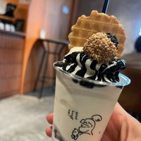
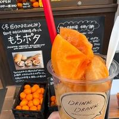
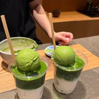
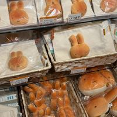
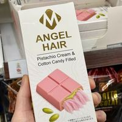
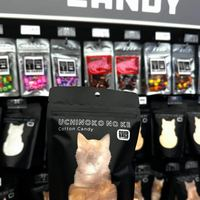
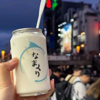
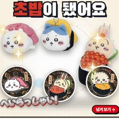

스낵재팬 찐 추천먹어보고 추천! 믿고 후기 보고 구매하세요!!!
이 포스팅은 쿠팡 파트너스 활동의 일환으로, 이에 따른 일정액의 수수료를 제공받습니다.


스낵재팬 정리탭
맛집 추천

나라 밤 디저트 good knight ice, 밤늦게까지 하는 아이스크림 파르페 가게 후기
교토 니시키 시장 근처 DRINK DRANK, 가을 한정 감 스무디 후기
교토 니넨자카 GOKAGO, 눈앞에서 한 잔씩 만드는 진한 말차 후기
교토 아라시야마 미피 사쿠라 베이커리, 미피 빵·굿즈 구경 후기
과자 리뷰
 일본 편의점 아이스 추천 모리나가 비스켓샌드, 촉촉 비스킷 + 바닐라 아이스 후기
일본 편의점 아이스 추천 모리나가 비스켓샌드, 촉촉 비스킷 + 바닐라 아이스 후기
일본 내추럴 로손 '엔젤헤어' 초콜릿, 쪼개면 솜사탕 실이 쭉~ 후기
일본 패밀리마트 고양이 솜사탕 '우치노코노케', 집사 필수템 후기
오사카 도톤보리 돈키호테 자판기 '생크림 캔', 뚜껑 따면 거의 다 크림 후기
일본 정보
- 일본 면세 리펀드 방식 11월 1일부터 시작, 과자 산 사람 꼭 알아 둘 것

후쿠오카 치이카와 스시 팝업, 미쓰코시 9층에서 치이카와가 초밥이 됐어요- 오사카 도톤보리 글리코 간판 교체 공사, 지금 간판은 11월까지